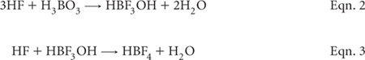

This method is suitable for the total determination of elements listed in Table 17.3 and many others. Measurements of elements expected to be present at very low concentrations (e.g. Cd) are also possible, using an ICP-MS or a GFASS analytical finish.
Soil is digested with a 3:1 mixture (v/v) of concentrated nitric acid (HNO3) and hydrofluoric acid (HF) for 15 min using a suitable laboratory microwave system – e.g. SW-846 EPA Method 3052 (1995); US EPA Method 3052 (1996). Andersen and Kisser (2004) report that most European laboratories use microwave assisted digestion when working with solid matrices.
HF overcomes extraction problems in the soil digest associated with the insolubility of aluminosilicate minerals in the presence of most acids. Hydrochloric acid (HCl) is included to increase the stability of very high concentrations of Fe and Al. Also hydrogen peroxide (H2O2) can be added in small quantities (e.g. 2 mL) to assist the oxidation of OM, particularly when soils are known to be organically rich. Heating to 180 ± 5°C in reagent-resistant vessels such as teflon ‘bombs’ assists dissolution of solid matrices.
After cooling, make the digest to an appropriate volume before centrifugation (or equivalent) and analysis by ICPAES (or other suitable instrumentation), provided a HF-resistant torch is available, as is supplied by major instrument manufacturers. Alternatively, the diluted digest may be treated with H3BO3 to complex free F– in solution, and also to facilitate the dissolution of precipitated fluorides (Chen and Ma 2001; Wilson et al. 2006) according to Eqns. 2 and 3. The downside of adding H3BO3 is that it can create a matrix effect in subsequent analysis by ICPAES, sufficient to result in a 20% decrease in sensitivity for Mo, Ni, Pb, Sb, Se and Sn, and a 70% decrease in sensitivities for P and S (Chen and Ma 2001).

Another variant is to take the digest to dryness on a hot plate before re-dissolution using HNO3 or HCl (Lo and Sakamoto 2005).
Because all acids used, especially HF, are highly corrosive and toxic, organisations and operators must be aware of the extreme workplace health and safety issues involved. Analysts must have access to full, relevant Material Safety Data Sheets (MSDS), along with appropriate recovery measures in the event of an accident. Domestic microwave ovens and inappropriately sealed vessels without pressure relief must not be used for microwave digestions. That is, all apparatus and microwave equipment must be designed specifically for safe use in laboratories (Kingston and Jassie 1988; Kingston and Haswell 1997). Moreover, safety glasses, gloves and lab coats must be worn when handling acids, acid digests, standard solutions and other chemicals. All operations involving the transfer or dilution of acids should be carried out in a fume cupboard or in a lamina-flow hood. Pipetting of solutions by mouth must not occur.
Laboratory Microwave System and Digestion Equipment
Only laboratory-grade microwave equipment should be used for performance and safety reasons. The microwave’s temperature sensors should be accurate to ±2°C, including at the final temperature setting of 175–180°C. No specific calibration settings are provided for the microwave as these are influenced by the number and type of digestions vessels used at the time. The internal volume of each of these digestion vessels should be ≥50 mL. Each must be capable of withstanding pressures of at least 30 bar (435 psi), and capable of controlled pressure relief. Only fluorocarbon containers (such as PFA or TFM) are considered acceptable.
All digestion vessels and volumetric ware must be carefully acid washed and rinsed with deionised water (see Note 1 of Method 18D1 for guidance). Most manufacturers recommend that every third or fourth digest should be a reagent blank without soil, run mainly to clean residues from the inside of digestion vessels. When switching between high concentration samples and low concentration samples, it is recommended digestion vessels be cleaned by heating with 1+1 HCl for 2 h, followed by heating with 1+1 HNO3 for 2 h, before rinsing with deionised water and drying in a clean environment.
ICPAES
Calibrate and operate as per manufacturer’s instructions. A high resolution instrument, capable of automated operation, is preferred.
GFAAS
Calibrate and operate as per manufacturers instructions.
ICP-MS
Calibrate and operate as per manufacturers instructions.
Deionised Water
This water should be triple-deionised, with a minimum resistivity of 4.0 MΩ/cm.
68% Nitric Acid
As a minium use trace-metal grade HNO3 of 63.012 g/mol. Re-distilled HNO3 is preferred. Boiling temperature is 120.5°C at 1 atm.
Dilute 6.667 mL of nitric acid (HNO3, 15 mol/L; trace-metal grade) to 1.0 L with deionised water and store in a clean plastic container.
Hydrofluoric acid (redistilled or trace-metal grade)
Purchase commercially and handle with extreme care. The product should assay (acidmetric) at 39–43%, with a wt/mL (20°C) of ≈1.13 g. Because of its high reactivity toward glass, HF must be stored (only small quantities) in secure polyethylene or teflon containers.
4.5% Boric Acid Solution
Dissolve 45 g trace-metal grade H3BO3 in deionised water and make volume to 1.0 L.
Primary, Secondary and Working Standards
Prepare Primary and Secondary Standards as per Method 17B1. Also prepare standards for As, Na, Si and Sr (not described in Method 17B1) using commercially available standard solutions such as: 1000 mg/L of As and Sr; 5000 mg/L of Na and 10 000 mg/L of Si. Use Method 17B1 as a guide in the preparation of Working Standards, ensuring that samples and standards are matrix matched.
Weigh a dry, well-mixed, finely ground (particle size <0.05 mm) sample to the nearest 0.001 g into an appropriate digestion vessel, equipped with a pressure relief mechanism. For soils, ash, sediments, sludges, and siliceous wastes, initially use no more than 0.5 g. Add 9 ± 0.1 mL concentrated HNO3 and 3 ± 0.1 mL of high-grade or redistilled HF to the vessel in a fume hood. For very sandy soils, >3 mL of HF is recommended to a maximum of 5 mL (see Note 1).
If a vigorous reaction occurs upon the initial addition of reagents (as will occur if carbonates are present) or if the sample is suspected of containing easily oxidisable materials, allow the sample to predigest in the uncapped digestion vessel in the fume cupboard. Once the initial reaction has ceased, continue through the digestion procedure. Seal and place each digestion vessel in the microwave system according to manufacturer’s instructions. Connect monitors for temperature and pressure according to manufacturer’s specifications.
The temperature of each sample should rise to 180 ± 5°C in ≈5.5 min and remain at 180 ± 5°C for ≈9.5 min. The time taken to reach 180°C is not as critical as the heating time at 180°C. Accordingly, samples may be heated at a slower rate to reach 180°C (e.g. 10 min) to help overcome reactive substances in samples. At the end of the microwave program, allow the digestion vessels to cool for 5 min before removing them from the microwave system. When the digestion vessels have cooled to near room temperature, determine if the digestion vessels have maintained a complete seal throughout the digestion; consult the manufacturer’s recommendations on how best to do this. Repeat any digestions where the seal has been breached.
Carefully uncap and vent each digestion vessel in a fume hood, following the procedure recommended by the vessel manufacturer. When cool, follow one of three options, depending on the analytical finish and equipment available.
1. Transfer the sample to a PFA or TFM beaker (e.g. teflon) for evaporation of acid to dryness over a hot plate at about 110°C. After cooling add 0.10 M HNO3 (Lo and Sakamoto 2005). Make solution to volume (25, 40 or 50 mL) using a graduated PPE tube. Use this option only on compatible ICPAES or ICP-MS systems. Matrix match relevant Working Standards with the samples and record the final digest volume, usually 25 mL.
2. Transfer particulate-free digests to graduated PFA or TFM tubes. Make to volume (25, 40 or 50 mL) using deionised water. Use this option only on compatible ICPAES or ICP-MS systems that have HF-resistant components. Matrix-match relevant Working Standards with the samples and record the final digest volume, usually 25 mL.
3. Transfer the sample to a PFA or TFM beaker. Add 20 mL of 4.5% H3BO3 to complex fluoride (Wilson et al. 2006). Subsequently dilute accurately to volume (100–200 mL) using appropriate plastic ware. Matrix-match standards to samples in terms of HNO3 and H3BO3 acid strengths.
Calibrate the relevant instrument (ICPAES, ICP-MS or GFAAS) using freshly prepared and matrix matched Working Standards. After appropriate background corrections have been performed, plot the corrected intensities against concentrations (certified or median) for each analyte of interest. For a sample weight of 0.5 g and a final digest volume of 25 mL, multiply the ICPAES result in mg/L by 50.
Suitability of the calibration and an estimate of LOR can be assessed from regression and goodness-of-fit parameters. Monitor accuracy of secondary and in-house check soils by control charting the results.
Report elemental concentrations (% or mg/kg of element) on an oven dried basis. If the samples were not oven-dry on commencement of digestion, use the air-dry moisture to oven-dry moisture ratio to convert to an oven-dry concentration. Refer to Method 2A1 for guidance with regard to this soil moisture calculation.
1. Toxic fumes are produced during digestion. Therefore, all steps involving the additions of reagents to open vessels and the opening of microwave digestion vessels must be performed in a properly operating fume cupboard. The analyst should wear protective gloves and face protection and must not at any time permit a solution containing HF to come in contact with skin, lungs or glass.
Table 17.3. Typical uncertainty, lower limits of reporting (LOR) and calibration ranges for Method 17A1.
Analyte |
Uncertainty (%)# |
LOR |
Typical calibration range |
Al |
5 |
0.5% |
0–10.0% |
As |
15 |
40 mg/kg |
0–500 mg/kg |
Ca |
5 |
0.01% |
0–4.0% |
Co |
8 |
10 mg/kg |
0–30 mg/kg |
Cr |
5 |
15 mg/kg |
0–350 mg/kg |
Cu |
8 |
10 mg/kg |
0–200 mg/kg |
Fe |
5 |
0.4% |
0–8.0% |
K |
5 |
0.025% |
0–2% |
Mg |
5 |
0.04% |
0–1.2% |
Mn |
5 |
28 mg/kg |
0–1600 mg/kg |
Ni |
5 |
10 mg/kg |
0–120 mg/kg |
Pb |
15 |
40 mg/kg |
0–750 mg/kg |
Si |
5 |
1.2% |
0–45% |
Sr |
10 |
15 mg/kg |
0–200 mg/kg |
Ti |
5 |
0.05% |
0–2.0% |
V |
5 |
10 mg/kg |
0–150 mg/kg |
Zn |
8 |
30 mg/kg |
0–1200 mg/kg |